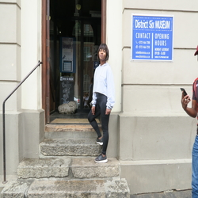
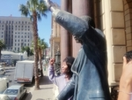

Phelisa Gqwetha

Which City?

Paris
The reason why i chose paris its because of its beauty features.
Paris is considered as the most beautiful place in the world.
The food and wine they
serve is just deliciase.
Even though i havent tasted it but i can feel.
Oh and most of all the Eiffel Tower
which i can take pictures on it.Paris is called a city of love because of its features.
A foreign language
| "English Phrase" | "shona phrase" |
|---|---|
| "Hi" | "Hesi" |
| "How are you" | "urisei" |
| "How old are you?" | "unemakore mangani?" |
historical places in Cape Town
District Six Musium

- This area was named District Six when it became the Sixth Municipal District of Cape Town in 1867.
- By 1982, after being declared a whites only area, the life of the community was over.
- The floor of the museum is covered with a big map of the district with hand written notes of former inhabitants, which indicate where their houses were once located.
City Hall

- Nelson Mandela made his first speech from City Hall after his release from prison back in 1990. .
- Back to the Cape Town City hall there is Darling Street.
- Mayor H Lieberman inaugurated the Cape Town City hall in 1905.
Castle of Good Hope

- It was build between 1666 and 1679 by the Dutch East India Company, it’s the oldest existing colonial building in South Africa.
- The first stone was laid on 2 January 1666 and it was completed by April 1679
- The Castle was built by soldiers, volunteers, slaves and Khoi undergoing punishment.